Scale-consistent ego-motion estimation is fundamental for autonomous ground robots. Bird's-Eye-View (BEV) representation naturally addresses the scale drift problem of monocular visual odometry (MVO) by providing a metric-scaled planar workspace, enabling the simplification of 6-DoF ego-motion to a more robust 3-DoF model. However, existing BEV-based methods suffer from two key limitations: sparse supervision signals from pose-only training, and information loss during perspective-to-BEV projection. We present BEV-ODOM2, an enhanced framework in the BEV-ODOM line that addresses both limitations without supervision modalities beyond the pose ground truth. Our approach introduces (1) pose-derived dense rigid BEV flow supervision, which reparameterizes the 3-DoF pose ground truth into a pixel-level training signal, and (2) Perspective View (PV)-BEV fusion, which computes correlation volumes before projection to retain additional motion cues and help alleviate projection ambiguity. An enhanced rotation sampling strategy further balances diverse motion patterns during training. We evaluate on four datasets with varied spatial scales: KITTI, Oxford, NCLT, and our newly collected ZJH-VO benchmark. BEV-ODOM2 reduces the RTE of BEV-ODOM by 39% on average across the four datasets. It further enables closed-loop navigation on a physical robot with centimeter-level cross-track error. Real-time inference on an NVIDIA Jetson AGX Orin confirms edge deployment feasibility. The code and the ZJH-VO dataset are publicly released to facilitate future research.
One ResNet-50+FPN backbone serves two branches. Both correlate frame t with frame t+1, and the only training label is the relative pose.
Where BEV-ODOM2 sits among BEV-based monocular odometry methods.
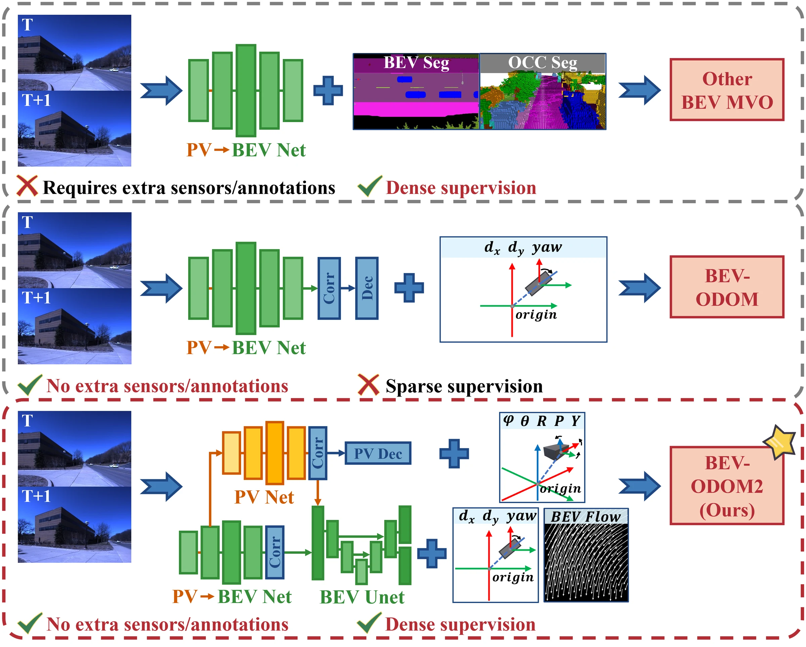
Supervise the BEV with segmentation or occupancy labels.
Learns from pose labels alone, but one 3-DoF pose per frame pair is a sparse signal.
Turns the same pose labels into a flow target on every BEV cell, and adds PV correlations before projection.
A PV branch and a BEV branch share one backbone; both correlate frame t with frame t+1.
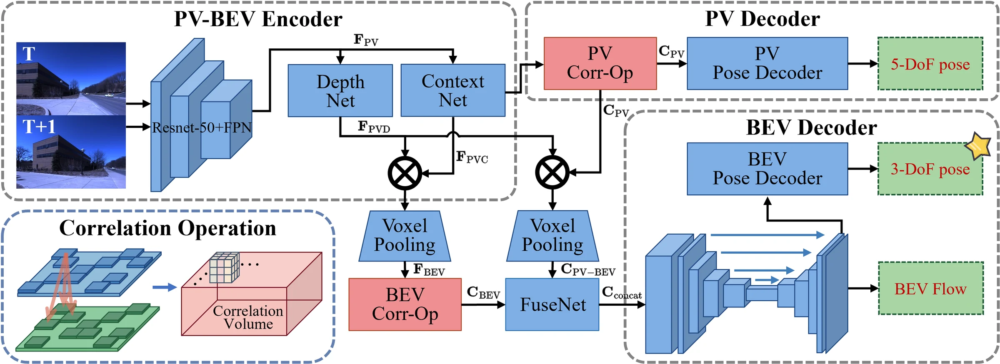
The 3-DoF relative pose defines a rigid transformation of the BEV grid. Every cell gets a displacement target, so a single pose label becomes a pixel-level training signal without depth, optical flow, or segmentation labels.
Correlation volumes are computed in the perspective view before projection and splatted into BEV next to the BEV-native correlation. This retains motion cues that projection discards and helps alleviate projection ambiguity. An auxiliary 5-DoF pose loss supervises the PV branch.
Training pairs are drawn from rotation-aware pair lists, so turns and in-place rotations are not drowned out by straight driving. This balances the motion patterns the network sees.
How a single 3-DoF pose label becomes a displacement target on every BEV cell.
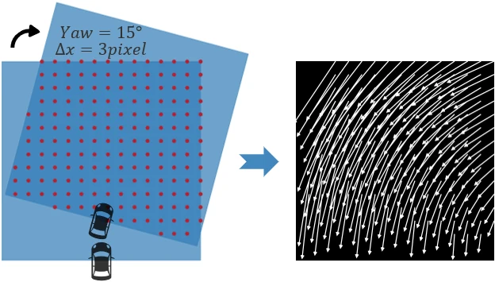
From one pose to a dense target. Each BEV cell (u, v) is mapped to vehicle coordinates, moved by the planar relative pose, and projected back onto the grid. The resulting per-cell displacement field is the flow target.
The BEV grid has 128×128 cells of 0.8 m. Flow is predicted and supervised on the 32×32 region (25.6 m × 25.6 m) closest to the vehicle on the camera side, and the 3-DoF pose is regressed from the same region. The BEV Explorer below shows this region on real sequences.
Step through a test sequence frame by frame. The monocular image is the only network input. On the BEV grid, arrows show the per-cell motion between two frames: compare the predicted dense rigid BEV flow with the pose-derived target, and follow the resulting trajectory.
Flow arrows are drawn at the true scale of the grid (one frame pair; 0.8 m cells) on the 32×32 flow region, one arrow per 2×2 cells (per 4×4 cells in the 51.2 m view). LiDAR points are projected into the same grid for visualization only; BEV-ODOM2 never sees them. Released weights; test frames sampled every fifth frame, as in the paper.
Suburban driving (KITTI), urban driving (Oxford), campus navigation (NCLT), and small-scale indoor and outdoor scenes (ZJH-VO). One monocular camera per dataset.
| Methods | Ex. Supv. | Metric | NCLT | Oxford | ||||||||
|---|---|---|---|---|---|---|---|---|---|---|---|---|
| 02-02 | 02-19 | 03-17 | 08-20 | Average | 11-12 | 15-13 | 16-14 | 17-12 | Average | |||
| Traditional geometry-based method | ||||||||||||
| ORB-SLAM3 | ✗ | RTE** (%) | / | / | / | / | / | 65.22 | 952.41 | 191.75 | 77.44 | 321.70 |
| RRE** (°/100 m) | / | / | / | / | / | 19.83 | 10.81 | 16.17 | 19.31 | 16.53 | ||
| Pretrained or auxiliary-supervised methods (reference) | ||||||||||||
| VOLDOR (F. Model) | ✓ | RTE** (%) | 46.76 | 41.77 | 40.39 | 45.62 | 43.64 | 1123.22 | 76.02 | 142.27 | 324.06 | 416.39 |
| RRE** (°/100 m) | 17.11 | 19.26 | 26.20 | 19.26 | 20.46 | 15.98 | 20.59 | 15.42 | 12.96 | 16.24 | ||
| TartanVO (Pretrained Model) | ✓ | RTE** (%) | 47.48 | 50.97 | 48.10 | 52.23 | 49.69 | 74.43 | 83.35 | 75.51 | 72.53 | 76.45 |
| RRE** (°/100 m) | 39.51 | 38.48 | 39.21 | 37.68 | 38.72 | 32.56 | 25.68 | 31.63 | 33.23 | 30.77 | ||
| DF-VO (Pre & F. Model) | ✓ | RTE** (%) | / | / | 41.03 | 89.44 | 65.23 | 26.24 | 28.26 | 35.87 | 42.48 | 33.21 |
| RRE** (°/100 m) | / | / | 25.52 | 27.81 | 26.66 | 2.03 | 2.34 | 1.85 | 2.81 | 2.25 | ||
| DROID-SLAM (Pretrained Model) | ✓ | RTE** (%) | 34.07 | 110.18 | 44.17 | 41.80 | 57.55 | 35.18 | 136.58 | 133.31 | 25.82 | 82.72 |
| RRE** (°/100 m) | 14.23 | 10.50 | 10.67 | 12.04 | 11.86 | 1.89 | 1.43 | 1.99 | 3.47 | 2.19 | ||
| DPVO (Pretrained Model) | ✓ | RTE** (%) | / | 41.45 | 37.72 | 78.87 | 52.68 | 96.53 | 98.41 | 102.10 | 155.51 | 113.14 |
| RRE** (°/100 m) | / | 9.74 | 14.38 | 16.70 | 13.61 | 29.26 | 28.00 | 28.37 | 29.14 | 28.69 | ||
| MASt3R-SLAM (Pretrained Model) | ✓ | RTE* (%) | / | / | / | / | / | / | / | / | / | / |
| RRE* (°/100 m) | / | / | / | / | / | / | / | / | / | / | ||
| VGGT-SLAM (Pretrained Model) | ✓ | RTE** (%) | 48.56 | 50.62 | 53.64 | 68.66 | 55.37 | 62.92 | 74.21 | 72.16 | 57.31 | 66.65 |
| RRE** (°/100 m) | 38.65 | 38.75 | 41.12 | 38.30 | 39.21 | 14.08 | 21.26 | 24.12 | 14.57 | 18.51 | ||
| In-domain pose-only trained methods (main comparison) | ||||||||||||
| DeepVO | ✗ | RTE* (%) | 31.67 | 18.55 | 21.23 | 25.07 | 24.13 | 25.14 | 27.45 | 31.75 | 37.76 | 30.52 |
| RRE* (°/100 m) | 14.54 | 8.11 | 9.66 | 13.02 | 11.33 | 7.87 | 8.14 | 11.71 | 12.37 | 10.02 | ||
| SSVO (Our Reimpl.) | ✗ | RTE* (%) | 58.00 | / | 51.31 | / | 54.66 | / | / | / | / | / |
| RRE* (°/100 m) | 41.22 | / | 43.49 | / | 42.35 | / | / | / | / | / | ||
| VoT (Our Reimpl.) | ✗ | RTE* (%) | 40.27 | 28.57 | 23.02 | 26.31 | 29.54 | 70.33 | 16.61 | 70.06 | 63.79 | 55.20 |
| RRE* (°/100 m) | 19.77 | 14.34 | 13.05 | 15.70 | 15.71 | 27.08 | 3.51 | 28.17 | 24.39 | 20.78 | ||
| BEV-DWPVO | ✗ | RTE* (%) | 8.32 | 7.52 | 8.20 | 10.63 | 8.67 | 4.87 | 5.26 | 7.89 | 9.67 | 6.92 |
| RRE* (°/100 m) | 3.14 | 3.08 | 3.57 | 4.35 | 3.53 | 1.02 | 1.08 | 1.07 | 2.15 | 1.33 | ||
| BEV-ODOM | ✗ | RTE* (%) | 10.89 | 6.27 | 8.77 | 13.89 | 9.95 | 7.21 | 7.90 | 11.55 | 8.02 | 8.67 |
| RRE* (°/100 m) | 4.74 | 2.47 | 3.73 | 6.31 | 4.31 | 1.38 | 1.89 | 1.14 | 2.55 | 1.74 | ||
| BEV-ODOM2 (Ours) | ✗ | RTE* (%) | 5.30 | 4.03 | 3.66 | 5.75 | 4.68 | 3.38 | 3.24 | 7.98 | 4.76 | 4.84 |
| RRE* (°/100 m) | 2.70 | 1.62 | 1.71 | 2.72 | 2.19 | 0.82 | 0.87 | 0.99 | 1.33 | 1.00 | ||
Ex. Supv.: ✓ requires additional supervision (depth, optical flow, segmentation); ✗ pose-only. Pretrained Model: pretrained weights; F. Model: foundation models for optical flow and depth (Unimatch-Flow, ZoeDepth); Our Reimpl.: no official code, reimplemented and retrained per dataset with pose-only supervision. *Aligned using SE(3); **scaled by the first 10 m of ground truth, then aligned using SE(3). Bold: best; underline: second best (in the paper's ranking).
| Methods | Metric | KITTI | ZJH-VO | ||||||
|---|---|---|---|---|---|---|---|---|---|
| 09 | 10 | Average | F-09 | F-04 | F-01 | F-00 | Average | ||
| Traditional geometry-based method | |||||||||
| ORB-SLAM3 | RTE** (%) | 14.89 | 8.47 | 11.68 | 9.63 | 14.76 | 4.57 | 6.77 | 8.94 |
| RRE** (°/100 m) | 1.38 | 0.93 | 1.15 | 13.67 | 28.26 | 6.95 | 7.97 | 14.21 | |
| ATE** (m) | 53.69 | 16.15 | 34.92 | 6.34 | 5.73 | 2.03 | 3.00 | 4.28 | |
| ATE† (m) | 40.63 | 7.33 | 23.98 | 6.12 | 5.54 | 1.91 | 1.66 | 3.81 | |
| Pretrained or auxiliary-supervised methods (reference) | |||||||||
| VOLDOR (F. Model) | RTE** (%) | 58.45 | 68.64 | 63.55 | 14.76 | 8.13 | 38.23 | 35.88 | 24.25 |
| RRE** (°/100 m) | 0.60 | 0.77 | 0.69 | 36.33 | 84.80 | 34.04 | 28.91 | 46.02 | |
| ATE** (m) | 168.83 | 158.81 | 163.82 | 11.61 | 11.60 | 24.79 | 24.29 | 18.07 | |
| ATE† (m) | 152.98 | 125.78 | 139.38 | 11.63 | 11.23 | 20.54 | 24.45 | 16.96 | |
| TartanVO KITTI: reported ZJH: retrained | RTE* (%) | 6.00 | 6.89 | 6.45 | 5.98 | 5.27 | 23.27 | 6.71 | 10.31 |
| RRE* (°/100 m) | 3.11 | 2.73 | 2.92 | 14.76 | 18.46 | 29.79 | 6.58 | 17.40 | |
| ATE* (m) | 53.84 | 28.50 | 41.17 | 3.52 | 3.16 | 14.00 | 2.48 | 5.79 | |
| ATE† (m) | 27.52 | 23.65 | 25.59 | 3.48 | 3.14 | 11.70 | 2.19 | 5.13 | |
| DF-VO KITTI: reported ZJH: Pre & F. Model | RTE*/** (%) | 2.40 | 1.82 | 2.11 | 31.31 | 105.42 | 55.16 | 48.11 | 60.00 |
| RRE*/** (°/100 m) | 0.24 | 0.38 | 0.31 | 88.26 | 141.32 | 117.93 | 75.13 | 105.66 | |
| ATE*/** (m) | 7.73 | 3.00 | 5.37 | 116.79 | 64.45 | 45.99 | 19.71 | 61.73 | |
| ATE† (m) | 7.65 | 2.73 | 5.19 | 10.56 | 11.96 | 24.02 | 18.94 | 16.37 | |
| DROID-SLAM (Pretrained Model) | RTE** (%) | 21.01 | 18.73 | 19.87 | 16.85 | 6.98 | 14.15 | 25.00 | 15.75 |
| RRE** (°/100 m) | 0.33 | 0.23 | 0.28 | 25.50 | 26.36 | 6.15 | 30.44 | 22.11 | |
| ATE** (m) | 73.71 | 45.52 | 59.61 | 12.52 | 8.91 | 8.82 | 17.00 | 11.81 | |
| ATE† (m) | 74.31 | 17.27 | 45.79 | 11.65 | 8.33 | 3.57 | 10.78 | 8.58 | |
| DPVO (Pretrained Model) | RTE** (%) | 17.70 | 4.47 | 11.09 | 14.67 | 6.55 | 11.08 | 26.65 | 14.74 |
| RRE** (°/100 m) | 0.24 | 0.23 | 0.23 | 53.48 | 3.33 | 4.37 | 17.42 | 19.65 | |
| ATE** (m) | 64.80 | 10.98 | 37.89 | 11.11 | 7.46 | 6.94 | 18.08 | 10.90 | |
| ATE† (m) | 64.77 | 10.99 | 37.88 | 11.10 | 6.08 | 3.20 | 12.29 | 8.16 | |
| MASt3R-SLAM (Pretrained Model) | RTE* (%) | / | / | / | 14.38 | 8.40 | 46.39 | 34.97 | 26.03 |
| RRE* (°/100 m) | / | / | / | 8.48 | 9.18 | 9.78 | 14.44 | 10.47 | |
| ATE* (m) | / | / | / | 11.32 | 11.06 | 23.51 | 23.19 | 17.27 | |
| ATE† (m) | / | / | / | 11.38 | 10.03 | 16.00 | 22.60 | 15.00 | |
| VGGT-SLAM (Pretrained Model) | RTE** (%) | 22.90 | 14.50 | 18.70 | 8.84 | 5.39 | 8.29 | 15.37 | 9.47 |
| RRE** (°/100 m) | 2.86 | 3.06 | 2.96 | 32.77 | 16.81 | 3.77 | 5.01 | 14.59 | |
| ATE** (m) | 72.35 | 20.39 | 46.37 | 6.67 | 4.06 | 5.46 | 10.69 | 6.72 | |
| ATE† (m) | 72.47 | 19.88 | 46.18 | 6.10 | 2.68 | 3.24 | 3.94 | 3.99 | |
| In-domain pose-only trained methods (main comparison) | |||||||||
| DeepVO (Retrained) | RTE* (%) | 33.55 | 30.46 | 32.01 | 51.05 | 37.52 | 56.08 | 63.16 | 51.95 |
| RRE* (°/100 m) | 14.31 | 14.42 | 14.37 | 106.52 | 116.07 | 102.27 | 111.58 | 109.11 | |
| ATE* (m) | 59.38 | 180.10 | 119.74 | 25.65 | 18.71 | 14.72 | 21.17 | 20.06 | |
| ATE† (m) | 51.58 | 168.44 | 110.01 | 10.79 | 10.04 | 14.36 | 15.81 | 12.75 | |
| SSVO (Our Reimpl.) | RTE* (%) | 71.47 | 78.57 | 75.02 | / | / | / | / | / |
| RRE* (°/100 m) | 0.67 | 0.39 | 0.53 | / | / | / | / | / | |
| ATE* (m) | 203.34 | 174.77 | 189.05 | / | / | / | / | / | |
| ATE† (m) | 30.98 | 5.60 | 18.29 | / | / | / | / | / | |
| VoT (Our Reimpl.) | RTE* (%) | 91.02 | 85.11 | 88.06 | 2.59 | 4.27 | 24.74 | 8.64 | 10.06 |
| RRE* (°/100 m) | 22.28 | 34.16 | 28.22 | 8.31 | 13.02 | 35.55 | 13.21 | 17.52 | |
| ATE* (m) | 106.88 | 42.66 | 74.77 | 1.38 | 2.73 | 14.87 | 3.93 | 5.73 | |
| ATE† (m) | 79.89 | 36.76 | 58.32 | 1.29 | 2.68 | 13.48 | 2.78 | 5.06 | |
| BEV-DWPVO | RTE* (%) | 2.13 | 3.24 | 2.69 | 2.75 | 3.74 | 16.62 | 5.50 | 7.15 |
| RRE* (°/100 m) | 0.65 | 1.15 | 0.90 | 7.18 | 9.28 | 12.72 | 1.98 | 7.79 | |
| ATE* (m) | 8.69 | 9.04 | 8.87 | 1.75 | 2.42 | 10.68 | 3.39 | 4.56 | |
| ATE† (m) | 8.11 | 7.80 | 7.96 | 1.67 | 2.40 | 6.34 | 2.54 | 3.24 | |
| BEV-ODOM | RTE* (%) | 1.72 | 3.61 | 2.67 | 1.91 | 3.47 | 20.29 | 3.46 | 7.28 |
| RRE* (°/100 m) | 0.39 | 0.53 | 0.46 | 6.39 | 7.83 | 13.28 | 4.41 | 7.98 | |
| ATE* (m) | 6.35 | 8.42 | 7.39 | 1.15 | 2.00 | 11.00 | 1.63 | 3.95 | |
| ATE† (m) | 4.62 | 7.30 | 5.96 | 1.12 | 1.91 | 10.94 | 0.77 | 3.68 | |
| BEV-ODOM2 (Ours) | RTE* (%) | 1.37 | 3.46 | 2.42 | 1.67 | 3.29 | 6.57 | 3.08 | 3.65 |
| RRE* (°/100 m) | 0.35 | 0.52 | 0.44 | 4.59 | 8.48 | 3.88 | 5.38 | 5.58 | |
| ATE* (m) | 2.89 | 6.08 | 4.49 | 1.01 | 1.83 | 3.69 | 1.58 | 2.03 | |
| ATE† (m) | 2.72 | 5.97 | 4.35 | 1.00 | 1.82 | 3.43 | 1.30 | 1.89 | |
Method configuration is shown as KITTI / ZJH-VO where it differs. Gray entries: ORB-SLAM3 completes only partial ZJH-VO sequences. *SE(3); **scaled by the first 10 m of ground truth, then SE(3); †Sim(3).
Trajectory, input image, and predicted vs. ground-truth dense rigid BEV flow.
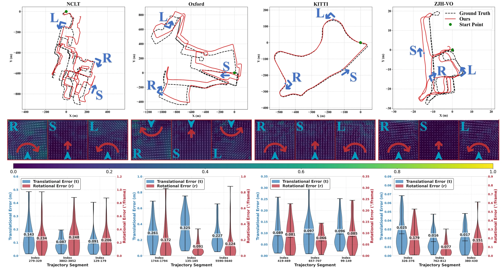
Recorded across four floors of an office complex with a suspension-free four-wheeled platform. A single model must cover observation distances from under a meter to tens of meters.
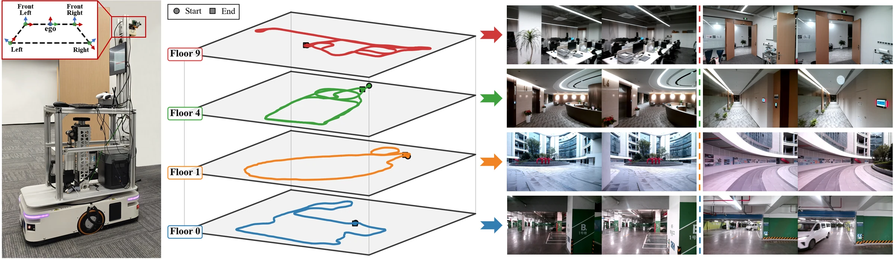
Moving vehicles and dim lighting.
Open space dominated by ground cues; most landmarks more than 10 m away.
Narrow passages, variable lighting, floor-to-ceiling glass windows.
Furniture 0.5–3 m from the camera, textureless walls, large in-place rotations.
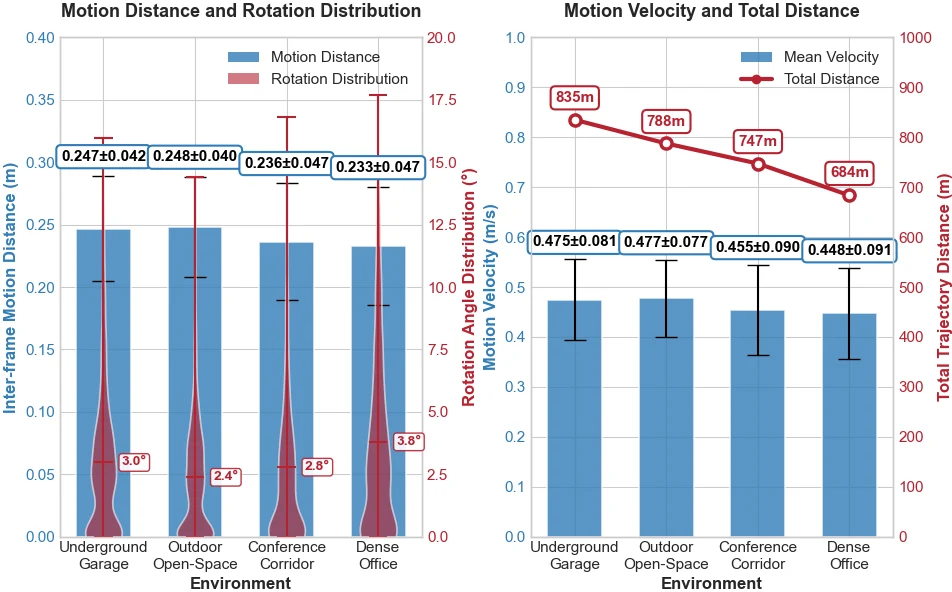
Motion statistics. At the evaluation interval (every eighth frame), inter-frame distances range from 0.00 to 0.31 m and rotations from 0.00° to 17.70°, over 12,666 evaluation frames.
Splits. traj_2 and traj_3 of each floor for training, traj_1 of each
floor for testing (columns F-09, F-04, F-01, F-00 of Table II), and two separately recorded trajectories for
checkpoint selection only.
Format. JPEG images named by capture timestamp, TUM-format poses at about 50 Hz, and a calibration file with intrinsics and extrinsics of all four cameras. Released under CC BY 4.0.
BEV-ODOM2 as the sole localization source of a teach-and-repeat system: the LiDAR only records ground truth and never enters the control loop.
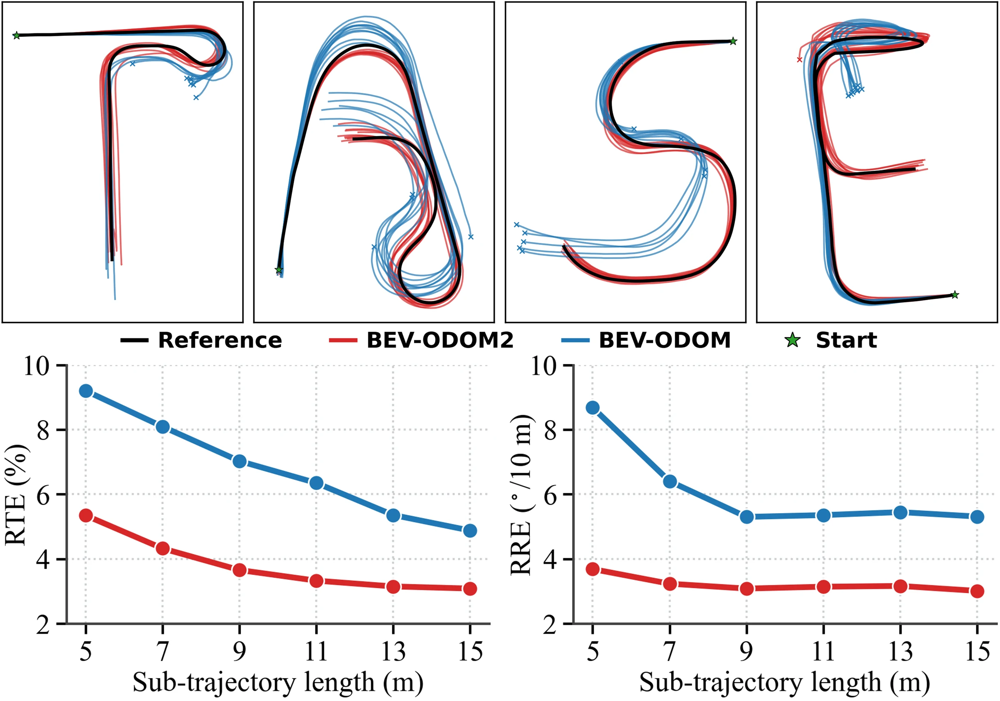
The robot is the platform that recorded ZJH-VO, with a single forward-facing monocular camera (15 Hz). During repetition, the odometry is initialized once from the LiDAR pose and receives no correction afterwards. Each of the four routes (12.9–23.1 m) is repeated 10 times per method, for 80 autonomous runs.
BEV-ODOM2 completes 39 of its 40 runs with a cross-track RMSE of 7–15 cm. BEV-ODOM accumulates larger drift that often pushes it off the path before the route ends. Both models were fine-tuned from their ZJH-VO weights on ten minutes of new-scene data (about 0.5 GPU-hours).
On the edge. On an NVIDIA Jetson AGX Orin, the FP32 model runs at 16.91 FPS (224×384) and 14.14 FPS (320×640). Converting only the ResNet-50 backbone to TensorRT FP16 raises this to 21.84 and 16.73 FPS, with RTE and RRE unchanged to two decimal places.
| Route | Length (m) | Method | Closed-loop task (actual vs. reference) | Odometry accuracy (VO vs. LiDAR GT) | ||||
|---|---|---|---|---|---|---|---|---|
| Coll.-free dist. (m) | Lat. RMSE (cm) | Term. err. (cm) | ATE (cm) | RTE (%) | RRE (°/10 m) | |||
| T | 18.1 | BEV-ODOM | 13.2 ± 3.3 | 18.2 ± 4.5 | 23.1 ± 16.6 | 32.0 ± 6.4 | 7.3 ± 2.2 | 1.54 ± 0.56 |
| BEV-ODOM2 | 18.1 (all ✓) | 10.3 ± 3.6 | 21.7 ± 14.4 | 14.4 ± 4.8 | 2.6 ± 1.0 | 1.72 ± 0.68 | ||
| A | 21.3 | BEV-ODOM | 19.7 ± 2.3 | 32.0 ± 5.3 | 73.9 ± 16.9 | 33.9 ± 5.0 | 5.2 ± 1.0 | 3.69 ± 1.68 |
| BEV-ODOM2 | 21.3 (all ✓) | 12.8 ± 3.7 | 23.6 ± 9.9 | 18.4 ± 3.6 | 2.8 ± 0.5 | 1.46 ± 0.43 | ||
| S | 12.9 | BEV-ODOM | 5.3 ± 1.6 | – | – | – | 18.8 ± 1.6 | 5.99 ± 1.48 |
| BEV-ODOM2 | 12.9 (all ✓) | 7.4 ± 1.4 | 8.4 ± 6.1 | 13.8 ± 1.5 | 2.8 ± 0.9 | 1.15 ± 0.54 | ||
| E | 23.1 | BEV-ODOM | 19.3 ± 0.4 | – | – | – | 6.3 ± 1.4 | 6.65 ± 2.13 |
| BEV-ODOM2 | 22.4 ± 1.8 | 15.1 ± 3.4 | 29.0 ± 29.2 | 21.2 ± 4.1 | 4.3 ± 2.0 | 4.67 ± 0.49 | ||
10 runs per route and method. Coll.-free dist.: collision-free driving distance averaged over the 10 runs. Lat. RMSE, Term. err., and ATE are averaged over completed runs (“–” when none complete). RTE and RRE use all 10 m sub-sequences of all runs. The VO estimate is compared with the LiDAR ground truth.
| Enhanced Rotation Sampling | Dense Flow Supervision | PV-BEV Fusion | NCLT | Oxford | ZJH-VO | ||||||
|---|---|---|---|---|---|---|---|---|---|---|---|
| RTE* | RRE* | ATE† | RTE* | RRE* | ATE† | RTE* | RRE* | ATE† | |||
| (%) | (°/100 m) | (m) | (%) | (°/100 m) | (m) | (%) | (°/100 m) | (m) | |||
| ✗ | ✗ | ✗ | 9.95 | 4.31 | 126.63 | 8.67 | 1.74 | 108.35 | 7.28 | 7.98 | 3.68 |
| ✓ | ✗ | ✗ | 7.31 | 3.28 | 128.68 | 6.71 | 1.17 | 108.75 | 6.29 | 7.40 | 2.57 |
| ✓ | ✓ | ✗ | 5.17 | 2.25 | 75.77 | 5.56 | 1.10 | 66.71 | 4.02 | 6.14 | 1.86 |
| ✓ | ✗ | ✓ | 5.83 | 2.73 | 145.94 | 5.37 | 1.12 | 84.96 | 5.12 | 5.64 | 1.83 |
| ✓ | ✓ | ✓ | 4.68 | 2.19 | 65.75 | 4.84 | 1.00 | 71.34 | 3.65 | 5.58 | 1.89 |
Row 1 contains none of the three components and corresponds to BEV-ODOM. Dense flow supervision (row 3 vs. row 2) reduces RTE by 29.3%, 17.1%, and 36.1% on NCLT, Oxford, and ZJH-VO; PV-BEV fusion alone (row 4 vs. row 2) reduces it by 20.2%, 20.0%, and 18.6%. *SE(3); †Sim(3).
| Method | Resolution | FPS | GPU Mem (GB) | GPU Util (%) |
|---|---|---|---|---|
| Traditional geometry-based method | ||||
| ORB-SLAM3 | 224×384 | 63.11 | - | - |
| 320×640 | 59.68 | - | - | |
| Pretrained or auxiliary-supervised methods (reference) | ||||
| VOLDOR | 224×384 | 17.27 | 1.27 | 63.0 |
| 320×640 | 12.30 | 1.83 | 71.7 | |
| TartanVO | 224×384 | 63.45 | 2.026 | 56.0 |
| 320×640 | 59.27 | 2.155 | 60.9 | |
| DF-VO | 224×384 | 9.37 | 3.037 | - |
| 320×640 | 6.26 | 3.291 | - | |
| DROID-SLAM | 224×384 | 10.58 | 21.138 | 54.7 |
| 320×640 | 7.30 | 21.231 | 54.0 | |
| DPVO | 224×384 | 18.88 | 4.226 | 65.9 |
| 320×640 | 18.03 | 4.251 | 68.7 | |
| MASt3R-SLAM | 224×384 | 12.62 | 4.703 | 78.7 |
| 320×640 | 12.62 | 4.703 | 78.7 | |
| VGGT-SLAM | 224×384 | 8.36 | 14.259 | 41.6 |
| 320×640 | 8.36 | 14.259 | 41.6 | |
| In-domain pose-only trained methods (main comparison) | ||||
| DeepVO | 224×384 | 416.70 | 3.176 | 41.3 |
| 320×640 | 348.24 | 4.366 | 38.5 | |
| SSVO | 224×384 | 35.78 | 1.785 | 71.2 |
| 320×640 | 35.51 | 1.996 | 74.4 | |
| VoT | 224×384 | 66.90 | 2.718 | 59.7 |
| 320×640 | 25.04 | 3.216 | 87.2 | |
| BEV-DWPVO | 224×384 | 21.61 | 2.566 | 40.0 |
| 320×640 | 18.21 | 3.138 | 49.2 | |
| BEV-ODOM | 224×384 | 92.84 | 2.289 | 59.7 |
| 320×640 | 72.64 | 2.503 | 68.7 | |
| BEV-ODOM2 (Ours) | 224×384 | 69.52 | 2.304 | 54.4 |
| 320×640 | 56.62 | 2.525 | 64.3 | |
| Edge Deployment on NVIDIA Jetson AGX Orin | ||||
| BEV-ODOM2 (FP32) | 224×384 | 16.91 | 1.625 | 63.7 |
| 320×640 | 14.14 | 1.650 | 76.7 | |
| BEV-ODOM2 (TRT Backbone) | 224×384 | 21.84 | 1.576 | 66.2 |
| 320×640 | 16.73 | 1.600 | 78.0 | |
Learning-based methods on an RTX 4090 with batch size 1; ORB-SLAM3 on CPU (Intel Core i7-12700KF). MASt3R-SLAM and VGGT-SLAM resize inputs to a fixed internal resolution. Edge rows: NVIDIA Jetson AGX Orin; TRT Backbone converts only the ResNet-50 to TensorRT FP16.
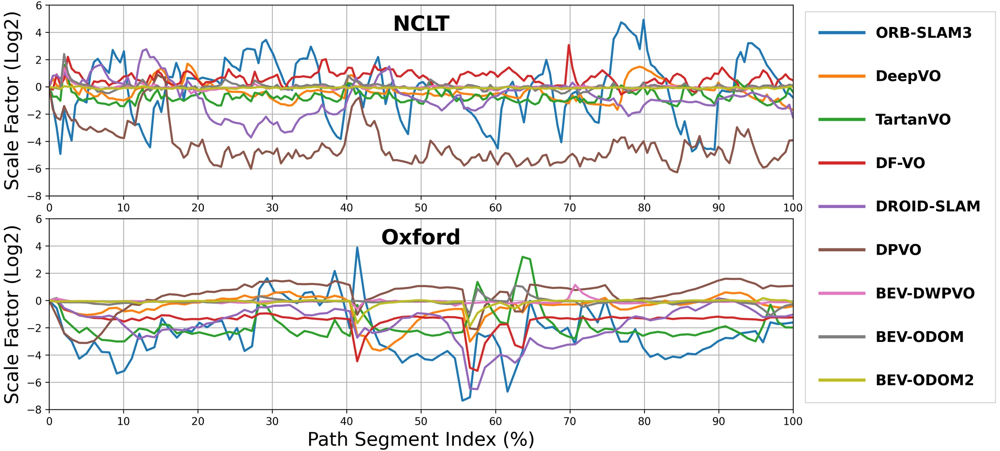
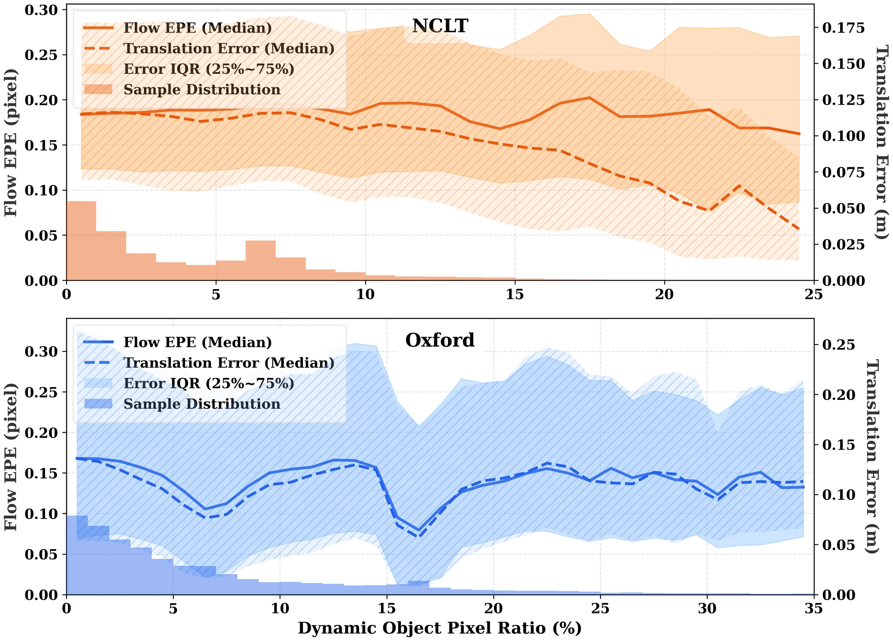
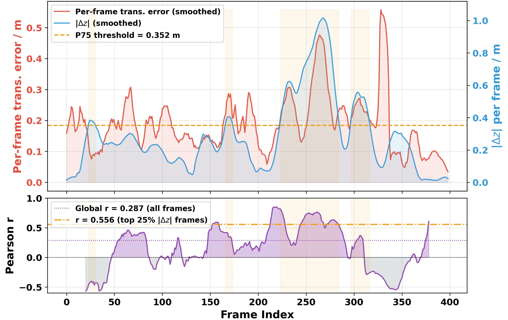
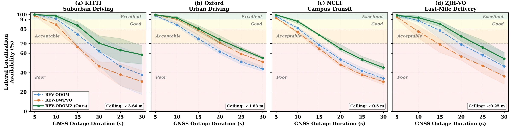
@misc{wei2025bevodom2,
title={BEV-ODOM2: Enhanced BEV-based Monocular Visual Odometry with PV-BEV Fusion and Dense Flow Supervision for Ground Robots},
author={Yufei Wei and Chenxiao Hu and Wangtao Lu and Sha Lu and Yuxiang Cui and Fuzhang Han and Rong Xiong and Yue Wang},
year={2025},
eprint={2509.14636},
archivePrefix={arXiv},
primaryClass={cs.RO},
url={https://arxiv.org/abs/2509.14636},
}